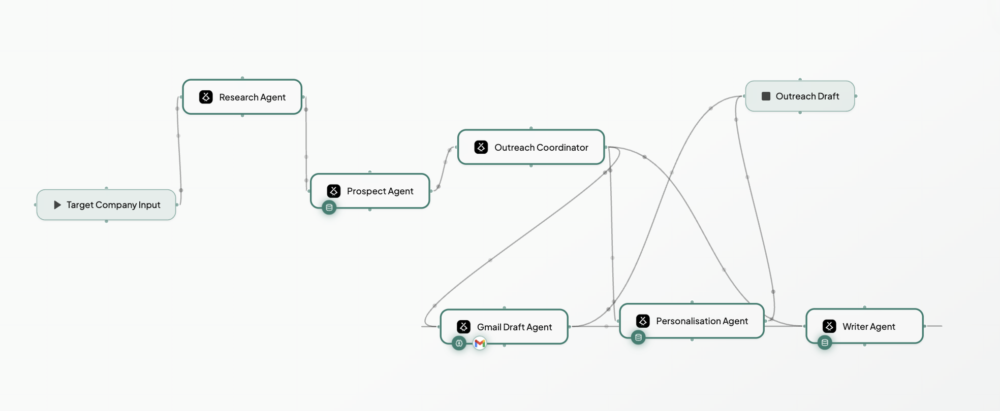

Start here
Open both of these before we begin — you'll build in Architect and refine in Studio.
The use case
What we're solving, what we're building, and what you'll walk away knowing.
The problem
Every SDR does the same thing before sending a single email: dig through a company's website and news, guess who the right person is, then try to write something that doesn't read like a template. It takes hours per account — and it still comes out generic. Scale that to a hundred accounts and the personalisation is the first thing to go.
What we're building
An AI SDR Outreach Assistant that does the whole chain in one run. You give it a target company and a document about your own company. It researches the target live, works out which roles are actually worth approaching, matches your value propositions to their likely pain, and writes a personalised draft email.
Then it goes one step further. We connect Gmail as a tool, so one click on "save as draft" and a Gmail agent creates the email in your actual inbox — subject, body, ready to review and send. That's the moment it stops being a text generator and starts being software that does something in the real world on your behalf.
The important part: every claim about your company comes from your uploaded document. The agents can't invent a feature, a customer, or a price — if it isn't in the knowledge base, it doesn't go in the email.
The flow
The orchestration you'll build

What you'll actually learn to build
The agents
Research Agent — searches the web for the target company's overview, size, recent signals, and likely pain points.
Prospect Agent — reads that research against your ICP and suggests the roles worth targeting, with a reason for each.
Personalisation Agent — maps your value propositions to that prospect's specific needs.
Writer Agent — drafts the email plus alternative opening hooks, strictly grounded in your knowledge base.
By the end of the session
You'll have a working multi-agent application, grounded in your own data, wired to live web search, and connected to your Gmail — pick a company, run it, and find a personalised draft waiting in your inbox. Built from a single prompt, in one sitting. That's the whole point: this is not a demo you watch, it's an app you leave with.
The knowledge base
This is the company document you'll upload into the app. Everything the agents say about Lyzr comes from here.
Preview the document Hide the document
Lyzr — Company Knowledge Base
Reference document for the AI SDR Outreach Assistant — grounds prospect research and outreach in what Lyzr does, who it's for, and how it's sold.
1. What Lyzr Does
Lyzr is an agentic AI platform that lets teams build, deploy, and govern AI agents and agent-powered applications — without stitching together frameworks and infrastructure from scratch. The goal is to take an idea for an AI agent and turn it into a working, deployable application in minutes rather than weeks.
Lyzr is built for teams that want the speed of a no-code / low-code builder but the control, security, and governance that real enterprise deployments demand. Agents can be grounded in a company's own data, equipped with tools, wrapped in guardrails, tested, and deployed — including into an organisation's own cloud environment.
2. The Product
Architect
Architect (architect.new) is the rapid build surface. You describe the agent or app you want, and Architect generates a working first version — the agents, the logic, and a usable UI — that you can immediately run and iterate on. It compresses the distance from idea to working prototype so teams can see something real fast and refine from there.
- Rapid prototyping: prototype an agent app from a prompt in minutes, not days
- From idea to working draft: agents, workflow, and a functional UI generated together
- Iterate in place: attach knowledge bases, wire in tools, and refine live
Studio
Studio is the full build and control environment where a prototype becomes something you'd put in front of a customer. It's where you customise agents in depth, tune their behaviour, add guardrails, test in a playground, and manage the app as it matures toward production.
- Deep customisation: fine-tune agent behaviour, prompts, models, tools, and knowledge
- Governance & testing: guardrails, testing, and playground before anything ships
- Production path: take an app from prototype to production-grade
Deployment
Lyzr apps can run on Lyzr's cloud or be deployed into an organisation's own cloud environment — AWS, Azure, or GCP — so data and agents stay inside the customer's security perimeter. This private-deployment capability is what makes Lyzr suitable for regulated and enterprise buyers, not just individual builders.
3. Value Propositions
- Speed to working app: go from an idea to a working, deployable agent app in minutes — the fastest path from concept to something real.
- Grounded in your data: agents are grounded in your own documents and data, so outputs reflect your business, not just a model's general knowledge.
- Governance built in: guardrails, testing, and controls are built into the platform rather than bolted on afterward.
- Deploy in your own cloud: deploy into your own AWS, Azure, or GCP environment so sensitive data never leaves your perimeter.
- One platform, prototype to production: prototype fast in Architect, then harden and scale in Studio — one platform across the whole lifecycle.
- From single agent to multi-agent: build single-purpose agents or orchestrated multi-agent systems as needs grow.
4. Ideal Customer Profile
Lyzr sells to organisations that want to build and operate AI agents seriously — where speed matters, but security, data control, and governance are non-negotiable.
Best-fit organisations
- Enterprises and mid-market companies building agentic AI into their products or internal operations
- Regulated or security-conscious industries — financial services, insurance, consulting, and similar — that need private, in-their-own-cloud deployment
- Teams that have tried assembling agents from raw frameworks and want speed plus governance instead of maintenance overhead
Typical buyers and champions
- Product and engineering leaders responsible for shipping AI features
- Innovation, AI, or digital-transformation teams standing up agentic use cases
- Operations leaders (e.g. revenue, support, HR) looking to automate knowledge-heavy workflows with grounded agents
Signals a prospect is a strong fit
- Publicly talking about AI adoption, automation, or agentic initiatives
- Hiring for AI / ML / agent-building roles
- Operating in a data-sensitive domain where a public SaaS-only tool would be a blocker
- Already experimenting with LLM tools but struggling to get past prototypes into production
5. Pricing
VERIFY BEFORE SHARING — The tiers below are representative placeholders for the demo. Replace plan names, inclusions, and any figures with Lyzr's current official pricing before sharing this document with webinar participants — the agent will quote whatever is written here as fact.
| Plan | Who it's for | What's included |
|---|---|---|
| Free | Individuals exploring agent building | Access to Architect for prototyping, a set number of build credits, community support |
| Pro | Solo builders and small teams shipping real apps | Higher build credits, Studio access, deploy to production, priority support |
| Team | Growing teams building agentic products together | Shared workspaces, collaboration, usage analytics, expanded credits |
| Enterprise | Organisations needing private, governed deployments | Deploy in your own cloud (AWS / Azure / GCP), SSO, guardrails & governance, dedicated support, custom SLAs |
Enterprise pricing is quoted based on deployment model, scale, and support requirements. Private-cloud deployment, SSO, advanced governance, and custom SLAs are enterprise-tier capabilities.
6. One-Line Positioning (for outreach)
"Lyzr helps teams turn an idea for an AI agent into a working, governed, deployable app in minutes — grounded in your own data, and deployable inside your own cloud."
The build prompt
Copy this and paste it into Architect to generate the app. The box scrolls — Copy prompt always takes the whole thing.
Build an AI SDR Outreach Assistant GOAL Given a target company the user wants to sell into, research that company, identify the best prospects to reach out to, and draft personalised outreach — all grounded in the user's own company details from an uploaded knowledge base. The app runs as a clear three-step flow: Research → Prospects → Outreach. AGENTS - Research Agent: researches the target company using web search — overview, industry, size, recent news/signals, and likely business pain points (use perplexity sonar pro) - Prospect Agent: using the company research plus the user's ICP and product from the knowledge base, identifies the roles/personas most worth targeting at that company, each with a short reason it's a fit. - Personalisation Agent: matches the user's value propositions (from the knowledge base) to the selected prospect's likely needs. - Writer Agent: drafts a personalised outreach email plus 2–3 alternative one-line opening hooks. - All claims about the user's own company, product, capabilities, value propositions, and pricing MUST come only from the uploaded knowledge base. Do not invent, assume, or embellish any capability, feature, or figure that is not in the document. If something isn't in the knowledge base, don't claim it. - Reference the user's specific product or offering by name (from the knowledge base) at least once in the email, where it reads naturally. - Details about the prospect and their company come from the research step, not the knowledge base. INPUTS - Knowledge base: a document describing the user's company — what it does, product, value propositions, ideal customer profile, and pricing. - Target company: the name of the company the user wants to sell into. - Optional: a specific prospect name and role, if the user already has one (skips discovery). FLOW (step by step; each step appears only after the previous one completes) 1. Research the company — user uploads the company knowledge base and enters the target company, then clicks "Research Company". The Research Agent returns a company research summary. 2. Find prospects — the Prospect Agent suggests 3–4 target roles/personas at that company, each with a one-line reason it fits the user's ICP. The user selects one, or enters their own prospect name/role. 3. Generate outreach — the Personalisation and Writer Agents produce a personalised draft email and alternative hooks for the selected prospect. OUTPUT (revealed progressively as each step completes) 1. Company Research Summary — overview, recent signals, inferred pain points. 2. Suggested Prospects — 3–4 roles/personas with fit reasons, shown as selectable cards. 3. Draft Email — editable text area with subject line and body, and a "Copy" button in its top-right. 4. Alternative Hooks — 2–3 one-line options listed below the draft. UI/UX - Single screen, two-column layout. Clean and professional, generous whitespace. - A visible 3-step progress indicator at the top of the right column: Research → Prospects → Outreach, highlighting the current step. - Left column (~35%): a "Your Company" card with the knowledge base upload (shows a "ready" state once uploaded); below it a "Target Company" card with a company-name field and a primary "Research Company" button. After step 1, a "Prospects" section appears with the suggested prospects as selectable cards. Once a prospect is selected, a primary "Generate Outreach" button appears. - Right column (~65%): step 1 shows the Research Summary; step 2 shows Suggested Prospects; step 3 shows the Draft Email (editable, with Copy button) and Alternative Hooks beneath it. - Show a loading state on the right column while any step is running. - Empty state before step 1: a short placeholder line telling the user to upload their company doc and enter a target company to begin. - The final step ends at an editable, copyable draft. Do not send email.
Iteration — connect Gmail
Once your app is working, send this as a follow-up prompt.
can you also add a agent that can connect to my gmail and create a mail draft in my gmail with the generated outreach content upon clicking save content as draft.
Apply your coupon
Use this code to top up your workshop credits.
Apply this only after your $20 free credits are used up. Applying the coupon while you still have your default $20 balance will overwrite it — you'll lose whatever is left. Build with your free credits first, and come back to this once they run out.